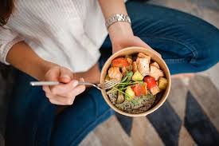
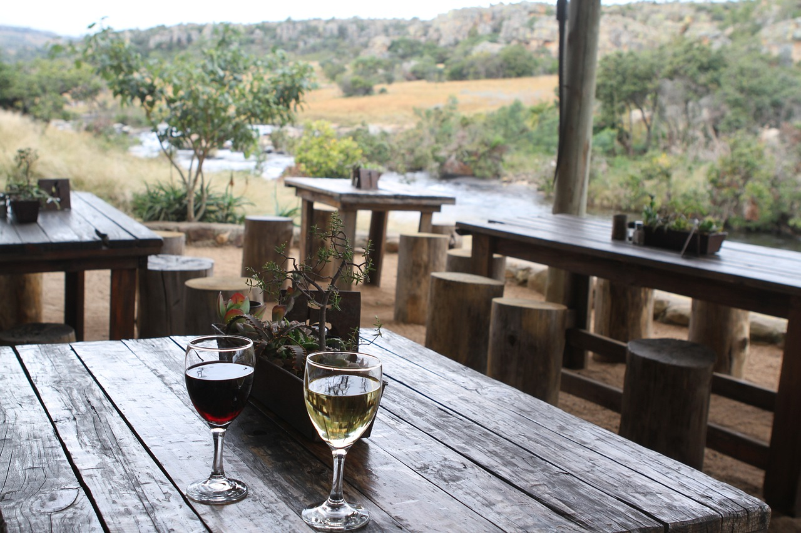
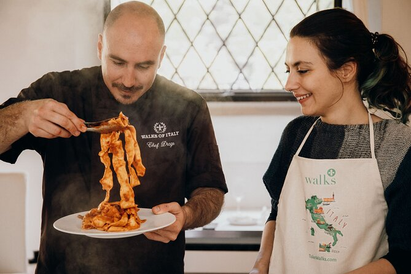

Experiences
Food Tourism Experiences, also called culinary experiences, incorporate more than just food and drinks. Travellers want to learn about, appreciate, and consume food and drink that reflects our culture, heritage, and traditions. They want a memorable experience that gives them a “taste of place”.
Food can inspire travel by providing experiences rooted in, and reflective of, our unique local food culture. For the purposes of tourism development, food in tourism focuses primarily on tours, festivals and events, restaurants, accommodations, and retailers.
Taste of the cultural food
Represents the traditions, beliefs, and practices of a geographic region, ethnic group, religious body, or cross-cultural community. Cultural foods may involve beliefs about how certain foods are prepared or used.
Culinary Walking Tour
Explore the vibrant food scene of the city with a guided walking tour. Sample local delicacies, visit food markets, and learn about the culinary history of the region.

Cooking Class with Local Chef
Learn to cook authentic dishes from the region with a hands-on cooking class led by a local chef. Discover secret recipes, ingredients, and techniques to recreate the flavors at home.
